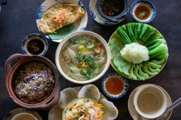
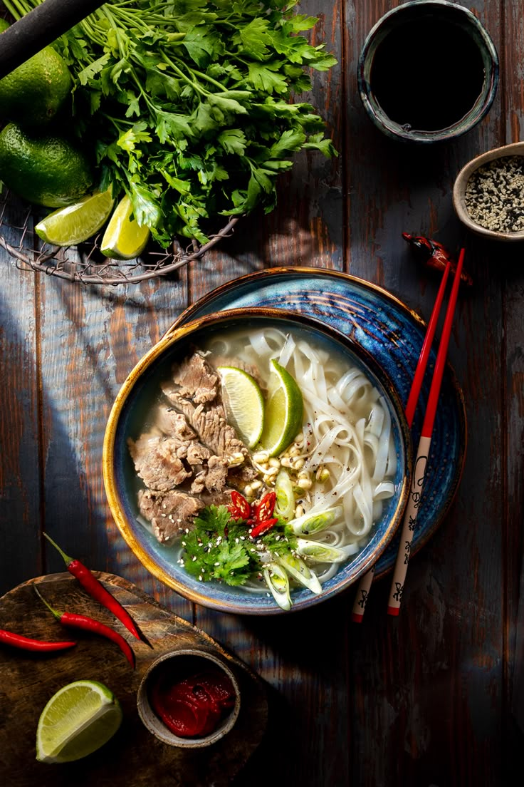

Discover Vietnamese Cuisine
Vietnamese cuisine is celebrated worldwide for its fresh ingredients, balanced flavors, and regional diversity. With influences from Chinese, French, and Southeast Asian cooking, Vietnamese food offers a unique culinary experience that varies from North to South.
At its heart, Vietnamese cooking emphasizes:
- The balance of five fundamental tastes (spicy, sour, bitter, salty, and sweet)
- Fresh herbs and vegetables
- Clear, aromatic broths
- Texture contrast in every dish
Dish of the Month: Phở

Phở, Vietnam's most famous culinary export, is a noodle soup that originated in Northern Vietnam in the early 20th century. This comforting dish features:
- Silky rice noodles
- Fragrant beef or chicken broth
- Tender slices of meat
- A garnish of fresh herbs, bean sprouts, and lime